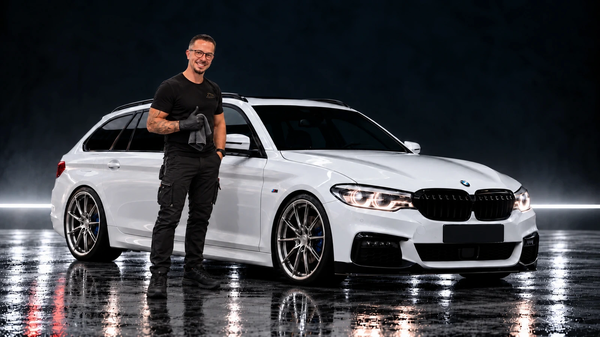

Finale Produktion · PC · Sichtprüfung 01
Das Muster entsteht mit der Bürste.
Startbild mit dem kleinen M am Kotflügel ansehen

Das M-Emblem sitzt hinter dem vorderen Rad. Tim und die bestehende Komposition sind erhalten.
Finale Produktion · PC · Sichtprüfung 01

Das M-Emblem sitzt hinter dem vorderen Rad. Tim und die bestehende Komposition sind erhalten.